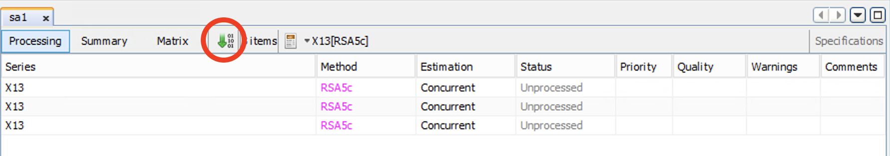
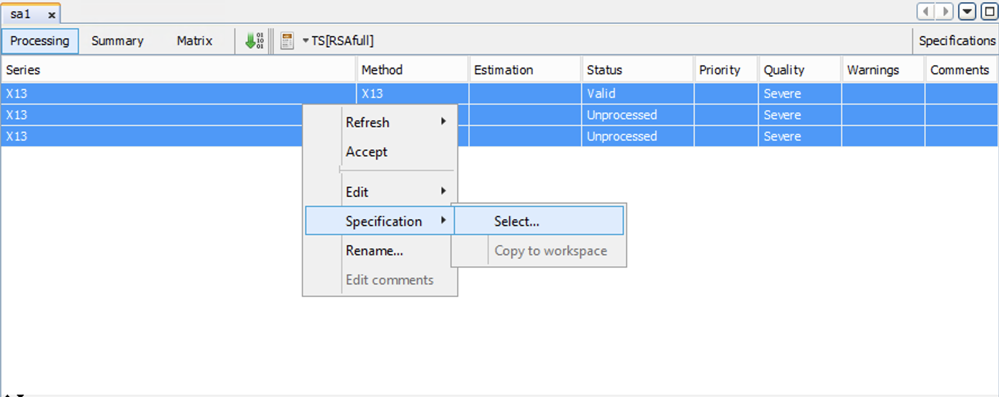

1 - Première manipulation de JDemetra+
Désaisonnaliser une série temporelle
L’objectif de ce TP est de faire une première manipulation de JDemetra+ : créer un workspace, importer des données, lancer une première désaisonnalisation.
1 Créer et sauvegarder un Workspace
Le “workspace” est l’objet de travail sous JDemetra+ : il contient les données, les modèles de désaisonnalisation, etc.
Il est composé :
D’un fichier
.xml(par exemplemonworkspace.xml).D’un dossier du même nom (par exemple
monworkspace).
Instructions :
Ouvrir le logiciel JDemetra+.
Sauvegarder le Workspace.
Cliquer sur
File > Save Workspace As….Entrer un nom pour le workspace et choisir l’emplacement où sera sauvegardé le workspace.
Fermer le logiciel JDemetra+ et ouvrir l’emplacement où a été sauvegardé le workspace :
- Que voit-on ?
On voit la création d’un fichier .xml et d’un dossier du même nom. Attention, c’est deux objets sont indissociables et le workspace n’est complet que si c’est deux objets sont présents ! Ainsi, si vous déplacez le fichier .xml sans déplacer le dossier, alors il vous sera impossible de lire le workspace !
2 Importer les séries (brutes) dans JDemetra+
Il existe de très nombreuses façons d’importer des données sous JDemetra+ (beaucoup de “providers”) : Excel, csv, txt, SDMX… Ici nous nous concentrerons sur le plus “classique” : le fichier Excel.
Si vous n’avez pas de fichier, vous pouvez utiliser celui disponible le fichier macronia.xlsx.
2.1 Importation d’un fichier Excel sous JDemetra+
On se place ici dans le cas où les données brutes figurent dans un fichier Excel qui respecte les règles suivantes :
la première colonne correspond à la date au format JJ/MM/AAAA ;
la première ligne contient le nom des séries.
Pour créer un tel fichier Excel depuis R, voir le TP 0 - Traitement des séries temporelles sous R.
Retourner sous JDemetra+.
Cliquer sur l’onglet
Providers.Clic-droit sur
Spreadsheets.Cliquer sur
Open.Cliquer sur le bouton
….Sélectionner un fichier Excel contenant les séries à désaisonnaliser.
Cliquer sur OK :
- Que voit-on sous
Spreadsheets?
- Que voit-on sous
2.2 Mettre un fichier en « favori »
Sauvegarder le workspace puis l’ouvrir de nouveau.
Cliquer sur l’onglet
Providers.Que voit-on ?
Les données ont disparues ! La partie Providers est en effet indépendante du Workspace.
Importer de nouveau votre fichier Excel.
Clic-droit sur le nom du fichier Excel qui est apparu sous
Spreadsheets.Cliquer sur
Add star.Que se passe-t-il ?
Sauvegarder le workspace, fermer le logiciel puis l’ouvrir de nouveau.
Cliquer sur l’onglet
Providers:- Que voit-on ?
Les données restent ! Si on utilise souvent ce fichier Excel c’est un moyen de le garder en mémoire.
JDemetra+ stocke l’emplacement du fichier Excel, si vous le changez de répertoire, les données ne seront plus reconnues ! Peu pratique me direz-vous mais c’est en fait indispensable si l’on souhaite mettre à jour. Évitez donc de laisser votre fichier dans le dossier “Téléchargements” !
3 Lancer une première désaisonnalisation automatique sous JDemetra+
3.1 Création d’un nouveau « multi-document »
Cliquer sur l’onglet
Workspace.Double-clic sur
Seasonal adjustment.Clic-droit sur
multi-documents.Cliquer sur
New.Double-clic sur
multi-documents:- Que voit-on ?
Double-clic sur le « multi-document » créé, nommé
SAProcessing-1par défaut- Que se passe-t-il ?
De façon équivalente vous pouvez cliquer sur le Menu Statistical methods > Seasonal Adjustment > Multi Processing > New.
3.2 Choisir une spécfication pré-définie
Aller dans l’onglet
SAProcessing-1Cliquer sur la flèche située à côté de la petite « calculatrice »
Cliquer sur le
+à côté de « x13 » puis cliquer surRSA5c(ouRSA5si l’on utilise JDemetra+ > 3.0.0)Cliquer quelque part dans SAProcessing-1
3.3 Lancer une désaisonnalisation
Cliquer sur
Providers.Faire glisser l’ensemble des séries de votre fichier dans l’onglet
SAProcessing-1:- Que voit-on ?
Cliquer sur la flèche verte figurant dans l’onglet
SAProcessing-1.

Que se passe-t-il ?
Cliquer sur une série :
- Que voit-on ?
Sauvegarder le workspace.
Il y a de grandes chances pour qu’un jour vous oubliiez l’étape 3.2 avant de “faire glisser” vos séries. Dans ce cas, vous aurez beau changer la spécification, cela n’affectera pas vos séries déjà importées. Deux solutions s’offrent à vous :
Solution brutale : fermer JDemetra+, supprimer toutes les séries, bref, tout recommencer.
Solution maligne : sélectionner toutes les séries (ctrl + clic gauche ou ctrl + a, ou ctrl + maj…), clic droit,
Spécification > Select > choisir la spécification voulue.

Dans JDemetra+ > 3.0.0 le choix d’une spécification est obligatoire pour ajouter des séries. Pour modifier la spécification par défaut il faut sélectionner les séries, clic droit, Edit > Reference specification > Select > choisir la spécification voulue.